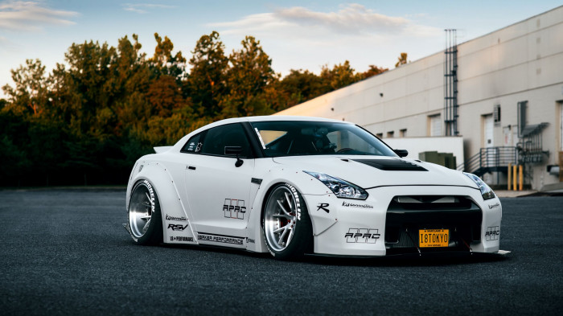

JDM
JDM是一个广泛的概念，可以是一辆车，可以是一类改装风格，也可以是一种汽车文。

Nsx
本田NSX是日本汽车制造商本田制造的一款跑车，拥有全铝车身，中置后驱布局，一度被称作“东瀛法拉利”。

GT-R
日产GT-R指的是日产汽车生产的高性能高可靠性的大马力跑车。在经过多年的演化改进之后，出现了GT-R车型

Sqpra
丰田Supra是丰田和宝马联合打造的一款跑车，与宝马Z4共享平台

Sqpra
Square是